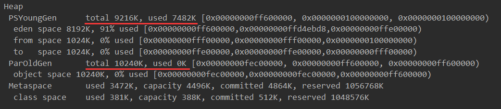
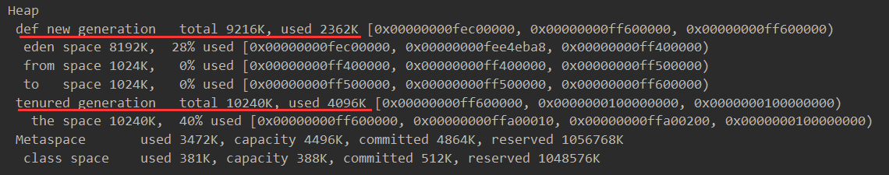
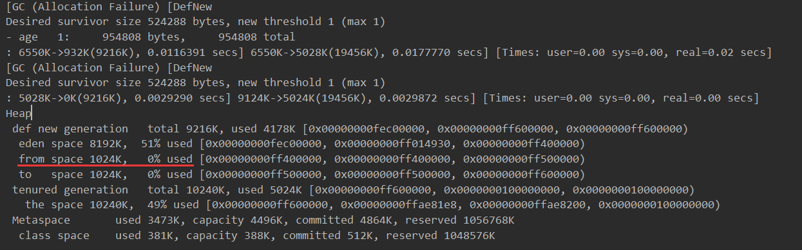
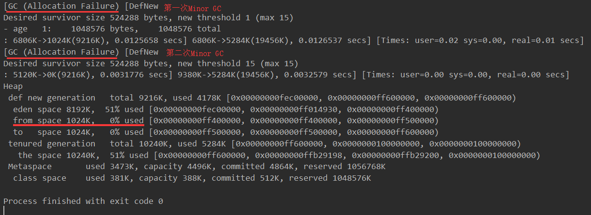
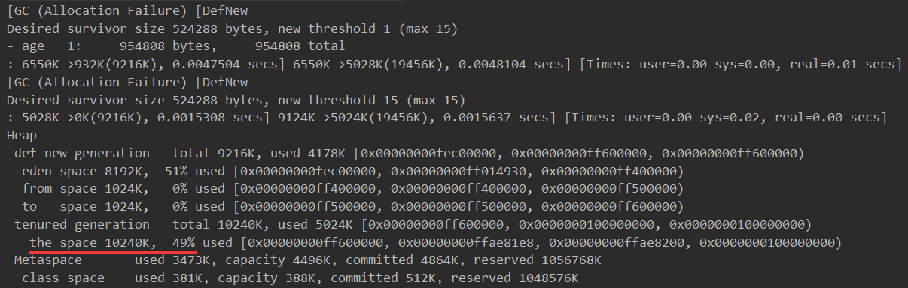

原文连接:https://www.cnblogs.com/smilepup-hhr/p/11494540.html
之前看过《深入了解Java虚拟机》感觉容易忘，今天写一篇博客加深一下印象。
JVM的内存分配和垃圾回收（GC）主要发生在Java堆中。而Java堆根据对象的存活时间可以分为新生代和老年代，而新生代又细分为Eden区、From Survivor区、To Survivor区，这是由于新生代中的垃圾回收算法基本都是复制算法。
1.对象优先在Eden区中分配
当Eden区没有足够空间进行分配时，虚拟机会发起一次新生代GC（Minor GC）。因为Java对象大多数都具有朝生夕灭的特性，所以Minor GC非常频繁，回收速度也比较快。
我们可以通过参数-XX:+PrintGCDetails来查看GC日志。下面举个实际例子来看看是不是优先在Eden区中分配内存。


-verbose:gc
-Xms20M
-Xmx20M
-Xmn10M
-XX:+PrintGCDetails
-XX:SurvivorRatio=8package MinorGC;
public class MinorGC {
private static final int _1MB = 1024*1024;
public static void main(String[] args) {
byte[] allocation1,allocation2,allocation3;
allocation1 = new byte[1*_1MB];
allocation2 = new byte[2*_1MB];
allocation3 = new byte[2*_1MB];
}
}可以看到控制台输出
新生代的内存使用情况：total 9216K, used 7482K
老年代的内存使用情况：total 10240K, used 0K

这样可以看出对象优先在Eden区中分配。
2.大对象直接进入老年代
大对象是指需要大量连续内存空间的Java对象，例如很长的字符串和数组，上面代码中的byte[]数组就是大数组。经常出现大对象容易导致内存中还有不少内存就要提前GC来获取连续的空间来安放它们。
虚拟机中可以设置参数-XX:PretenureSizeThreshold参数来让大于这个设置值的对象直接在老年代分配，这样的目的是避免在Eden区和两个Survivor区之间进行大量的内存复制。
下面测试一下，这时候要注意一下我用的是Java8，默认的垃圾回收器是Parallel Scavenge（新生代）+Parallel Old（老年代），而Parallel Scavenge不认识参数
-XX:PretenureSizeThreshold（Parallel Scavenge不需要设置），所以要先加上-XX:+UseSerialGC来将虚拟机的垃圾回收器设置成Serial / Serial Old回收器。
-verbose:gc
-Xms20M
-Xmx20M
-Xmn10M
-XX:+PrintGCDetails
-XX:SurvivorRatio=8
-XX:PretenureSizeThreshold=3145728
-XX:+UseSerialGCpackage MinorGC;
public class MinorGC {
private static final int _1MB = 1024*1024;
public static void main(String[] args) {
byte[] allocation4;
// allocation1 = new byte[_1MB];
// allocation2 = new byte[2*_1MB];
// allocation3 = new byte[2*_1MB];
allocation4 = new byte[4*_1MB];
}
}
可以发现4MB的对象直接放到老年代中了

3.长期存活的对象将进入老年区
虚拟机给每个对象定义一个对象年龄计数器。如果对象在Eden区出生并经过第一次Minor GC后仍然存活，并能被Survivor容纳，将被移动到Survivor的空间中，并且对象年龄设为1对象在Survivor区每“熬过”一次Minor GC，年龄就增加1岁，当它的年龄增加到一定程度（默认15岁），就将被晋升到老年代中。JVM中可以通过-XX:MaxTenuringThreshold设置。
下面我们测试一下
-verbose:gc
-Xms20M
-Xmx20M
-Xmn10M
-XX:+PrintGCDetails
-XX:SurvivorRatio=8
-XX:MaxTenuringThreshold=1
-XX:+PrintTenuringDistribution
-XX:+UseSerialGCpackage MinorGC;
public class MinorGC {
private static final int _1MB = 1024*1024;
@SuppressWarnings("unused")
public static void main(String[] args) {
byte[] allocation1, allocation2, allocation3;
allocation1 = new byte[_1MB / 4];
// 什么时候进入老年代取决于XX:MaxTenuringThreshold设置
allocation2 = new byte[4 * _1MB];
allocation3 = new byte[4 * _1MB];
allocation3 = null;
allocation3 = new byte[4 * _1MB];
}
}该方法中allocation1对象需要256KB内存，Survivor区可以容纳，所以讲它放到Survivor区中并让它年龄加1,。在第二次GC发生后它就进入老年代了，而Survivor区刚好被清除干净。

4.动态对象年龄判定
为了更好地适应不同程序的内存状况，虚拟机并不是永远要求对象的年龄必须达到了MaxTenuringThreshold才晋升老年代，如果在Survivor空间中相同年龄所有对象大小的总和大于Survivor空间的一半， 年龄大于或等于该年龄的对象就可以直接进入老年代，无须等到MaxTenuringThreshold中要求的年龄。
测试
配置和前面的一样，只是MaxTenuringThreshold=15
package MinorGC;
public class MinorGC {
private static final int _1MB = 1024*1024;
@SuppressWarnings("unused")
public static void main(String[] args) {
byte[] allocation1, allocation2, allocation3, allocation4;
allocation1 = new byte[_1MB / 4];
// allocation1+allocation2大于survivo空间一半
allocation2 = new byte[_1MB / 4];
allocation3 = new byte[4 * _1MB];
allocation4 = new byte[4 * _1MB];
allocation4 = null;
allocation4 = new byte[4 * _1MB];
}
}
发现运行结果中Survivor的空间占用仍然为0%，而老年代比预期增加了6%，也就是说，allocation1、allocation2对象都直接进入了老年代，而没有等到15岁的临界年龄。因为这两个对象加起来已经到达了
512KB，并且它们是同年的，满足同年对象达到Survivor空间的一半规则。

在注释掉allocation2后，发现只有一个256KB进入了老年代。

5.空间分配担保
在发生Minor GC之前，虚拟机会先检查老年代最大可用的连续空间是否大于新生代所有对象总空间，如果这个条件成立，那么Minor GC可以确保是安全的。如果不成立，则虚拟机会查看HandlePromotionFailure设置值是否允许担保失败。如果允许，那么会继续检查老年代最大可用的连续空间是否大于历次晋升到老年代对象的平均大小，如果大于，将尝试着进行一次Minor GC，尽管这次Minor GC是有风险的；如果小于，或者HandlePromotionFailure设置不允许冒险，那这时也要改为进行一次Full GC。
新生代使用复制收集算法，但为了内存利用率，只使用其中一个Survivor空间来作为轮换备份，因此当出现大量对象在Minor GC后仍然存活的情况（最极端的情况就是内存回收后新生代中所有对象都存活），就需要老年代进行分配担保，把Survivor无法容纳的对象直接进入老年代。与生活中的贷款担保类似，老年代要进行这样的担保，前提是老年代本身还有容纳这些对象的剩余空间，一共有多少对象会活下来在实际完成内存回收之前是无法明确知道的，所以只好取之前每一次回收晋升到老年代对象容量的平均大小值作为经验值，与老年代的剩余空间进行比较，决定是否进行Full GC来让老年代腾出更多空间。
取平均值进行比较其实仍然是一种动态概率的手段，也就是说，如果某次Minor GC存活后的对象突增，远远高于平均值的话，依然会导致担保失败（Handle Promotion Failure）。如果出现了HandlePromotionFailure失败，那就只好在失败后重新发起一次Full GC。虽然担保失败时绕的圈子是最大的，但大部分情况下都还是会将HandlePromotionFailure开关打开，避免Full GC过于频繁。
补充一下参数有哪些：
1、-Xmx –Xms：指定最大堆和最小堆
2、-Xmn、-XX:NewRatio、-XX:SurvivorRatio：
- -Xmn：设置新生代大小
- -XX:NewRatio：新生代（eden+2*s）和老年代（不包含永久区）的比值
例如：4，表示新生代:老年代=1:4，即新生代占整个堆的1/5
- -XX:SurvivorRatio（幸存代）设置两个Survivor区和eden的比值
例如：8，表示两个Survivor:eden=2:8，即一个Survivor占年轻代的1/10
参考自：深入理解JVM